A Primer on Private Statistics – Part I
By Gautam Kamath and Jonathan Ullman
Differentially private statistics is a very lively research area, and has seen a lot of activity in the last couple years. While the phrasing is a slight departure from previous work which focused on estimation with worst-case datasets, it turns out that the differences are often superficial. In a short series of blog posts, we hope to educate readers on some of the recent advancements in this area, as well as shed light on some of the connections between the old and the new. We’ll describe the settings, cover a couple of technical examples, and give pointers to some other directions in the area. Thanks to Adam Smith for helping kick off this project, Clément Canonne, Aaron Roth, and Thomas Steinke for helpful comments, and Luca Trevisan for his LaTeX2WP script.
1. Introduction
Statistics and machine learning are now ubiquitous in data analysis. Given a dataset, one immediately wonders what it allows us to infer about the underlying population. However, modern datasets don’t exist in a vacuum: they often contain sensitive information about the individuals they represent. Without proper care, statistical procedures will result in gross violations of privacy. Motivated by the shortcomings of ad hoc methods for data anonymization, Dwork, McSherry, Nissim, and Smith introduced the celebrated notion of differential privacy [DMNS06].
From its inception, some of the driving motivations for differential privacy were applications in statistics and the social sciences, notably disclosure limitation for the US Census. And yet, the lion’s share of differential privacy research has taken place within the computer science community. As a result, the specific applications being studied are often not formulated using statistical terminology, or even as statistical problems. Perhaps most significantly, much of the early work in computer science (though definitely not all) focus on estimating some property of a dataset rather than estimating some property of an underlying population.
Although the earliest works exploring the interaction between differential privacy and classical statistics go back to at least 2009 [VS09,FRY10], the emphasis on differentially private statistical inference in the computer science literature is somewhat more recent. However, while earlier results on differential privacy did not always formulate problems in a statistical language, statistical inference was a key motivation for most of this work. As a result many of the techniques that were developed have direct applications in statistics, for example establishing minimax rates for estimation problems.
The purpose of this series of blog posts is to highlight some of those results in the computer science literature, and present them in a more statistical language. Specifically, we will discuss:
- Tight minimax lower bounds for privately estimating the mean of a multivariate distribution over
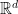
, using the technique of tracing attacks developed in [BUV14,DSSUV15, BSU17, SU17a, SU17b, KLSU19]. - Upper bounds for estimating a distribution in Kolmogorov distance, using the ubiquitous binary-tree mechanism introduced in [DNPR10,CSS11].
In particular, we hope to encourage computer scientists working on differential privacy to pay more attention to the applications of their methods in statistics, and share with statisticians many of the powerful techniques that have been developed in the computer science literature.
1.1. Formulating Private Statistical Inference
Essentially every differentially private statistical estimation task can be phrased using the following setup. We are given a dataset  of size
of size
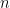
, and we wish to design an algorithm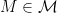
where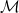
is the class of mechanisms that are both:- differentially private, and
- accurate, either in expectation or with high probability, according to some task-specific measure.
A few comments about this framework are in order. First, although the accuracy requirement is stochastic in nature (i.e., an algorithm might not be accurate depending on the randomness of the algorithm and the data generation process), the privacy requirement is worst-case in nature. That is, the algorithm must protect privacy for every dataset
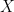
, even those we believe are very unlikely.Second, the accuracy requirement is stated rather vaguely. This is because the notion of accuracy of an algorithm is slightly more nuanced, depending on whether we are concerned with empirical or population statistics. A particular emphasis of these blog posts is to explore the difference (or, as we will see, the lack of a difference) between these two notions of accuracy. The former estimates a quantity of the observed dataset, while the latter estimates a quantity of an unobserved distribution which is assumed to have generated the dataset.
More precisely, the former can be phrased in terms of empirical loss, of the form:
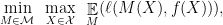
where is some class of randomized estimators (e.g., differentially private estimators),
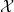
is some class of datasets,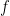
is some quantity of interest, and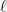
is some loss function. That is, we’re looking to find an estimator that has small expected loss on any dataset in some class.In contrast, statistical minimax theory looks at statements about population loss, of the form:
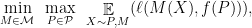
where
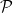
is some family of distributions over datasets (typically consisting of i.i.d. samples). That is, we’re looking to find an estimator that has small expected loss on random data from any distribution in some class. In particular, note that the randomness in this objective additionally includes the data generating procedure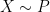
.These two formulations are formally very different in several ways. First, the empirical formulation requires an estimator to have small loss on worst-case datasets, whereas the statistical formulation only requires the estimator to have small loss on average over datasets drawn from certain distributions. Second, the statistical formulation requires that we estimate the unknown quantity
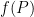
, and thus necessitates a solution to the non-private estimation problem. On the other hand, the empirical formulation only asks us to estimate the known quantity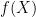
, and thus if there were no privacy constraint it would always be possible to compute exactly. Third, typically in the statistical formulation, we require that the dataset is drawn i.i.d., which means that we are more constrained when proving lower bounds for estimation than we are in the empirical problem.However, in practice (more precisely, in the practice of doing theoretical research), these two formulations are more alike than they are different, and results about one formulation often imply results about the other formulation. On the algorithmic side, classical statistical results will often tell us that
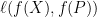
is small, in which case algorithms that guarantee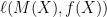
is small also guarantee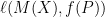
is small.Moreover, typical lower bound arguments for empirical quantities are often statistical in nature. These typically involving constructing some simple “hard distribution” over datasets such that no private algorithm can estimate well on average for this distribution, and thus these lower bound arguments also apply to estimating population statistics for some simple family of distributions. We will proceed to give some examples of estimation problems that were originally studied by computer scientists with the empirical formulation in mind. These results either implicitly or explicitly provide solutions to the corresponding population versions of the same problems—our goal is to spell out and illustrate these connections.
2. DP Background
Let
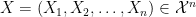
be a collection of samples where each individual sample comes from the domain . We say that two samples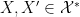
are adjacent, denoted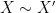
, if they differ on at most one individual sample. Intuitively, a randomized algorithm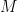
, which is often called a mechanism for historical reasons, is differentially private if the distribution of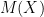
and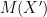
are similar for every pair of adjacent samples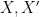
.Definition 1 ([DMNS06]) A mechanism
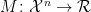
is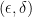
-differentially private if for every pair of adjacent datasets , and every (measurable)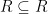
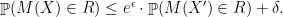
We let
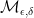
denote the set of mechanisms that satisfy -differential privacy.Remark 1 To simplify notation, and to maintain consistency with the literature, we adopt the convention of defining the mechanism only for a fixed sample size . What this means in practice is that the mechanisms we describe treat the sample size is public information that need not be kept private. While one could define a more general model where is not fixed, it wouldn’t add anything to this discussion other than additional complexity.
Remark 2 In these blog posts, we stick to the most general formulation of differential privacy, so-called approximate differential privacy, i.e. -differential privacy for
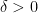
essentially because this is the notion that captures the widest variety of private mechanisms. Almost all of what follows would apply equally well, with minor technical modifications, to slightly stricter notions of concentrated differential privacy [DR16, BS16, BDRS18], Rényi differential privacy [Mir17], or Gaussian differential privacy [DRS19]. While so-called pure differential privacy, i.e.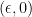
-differential privacy has also been studied extensively, this notion is artificially restrictive and excludes many differentially private mechanisms.
A key property of differential privacy that helps when desinging efficient estimators is closure under postprocessing:
Lemma 2 (Post-Processing [DMNS06]) If is -differentially private and
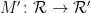
is any randomized algorithm, then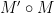
is -differentially private.
The estimators we present in this work will use only one tool for achieving differential privacy, the Gaussian Mechanism.
Lemma 3 (Gaussian Mechanism) Let
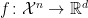
be a function and let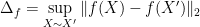
denote its
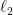
-sensitivity. The Gaussian mechanism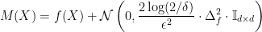
satisfies -differential privacy.
3. Mean Estimation in
Let’s take a dive into the problem of private mean estimation for some family of multivariate distributions over . This problem has been studied for various families and various choices of loss function. Here we focus on perhaps the simplest variant of the problem, in which contains distributions of bounded support
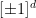
and the loss is the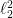
error. We emphasize, however, that the methods we discuss here are quite versatile and can be used to derive minimax bounds for other variants of the mean-estimation problem.Note that, by a simple argument, the non-private minimax rate for this class is achieved by the empirical mean, and is
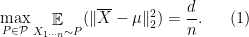
The main goal of this section is to derive the minimax bound
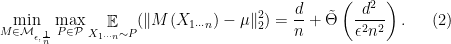
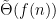
refers to a function which is both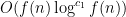
and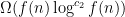
for some constants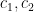
. The proof of this lower bound is based on robust tracing attacks, also called membership inference attacks, which were developed in a chain of papers [BUV14, DSSUV15, BSU17, SU17a, SU17b, KLSU19]. We remark that this lower bound is almost identical to the minimax bound for mean estimation proven in the much more recent work of Cai, Wang, and Zhang [CWZ19], but it lacks tight dependence on the parameter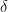
, which we discuss in the following remark.Remark 3 The choice of
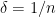
in (2) may look strange at first. For the upper bound this choice is arbitrary—as we will see, we can upper bound the rate for any at a cost of a factor of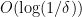
. The lower bound applies only when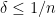
. Note that the rate is qualitatively different when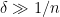
. However, we emphasize that -differential privacy is not a meaningful privacy notion unless . In particular, the mechanism that randomly outputs elements of the sample satisfies -differential privacy. However, when , this mechanism completely violates the privacy of person in the dataset. Moreover, taking the empirical mean of these samples gives rate , which would violate our lower bound when is large enough. On the other hand, we would expect the minimax rate to become slower when . This expectation is, in fact, correct, however the proof we present does not give the tight dependence on the parameter . See [SU17a] for a refinement that can obtain the right dependence on , and [CWZ19] for the details of how to apply this refinement in the i.i.d. setting.
3.1. A Simple Upper Bound
Theorem 4 For every , and every , there exists an -differentially private private mechanism such that
Proof: Define the mechanism
This mechanism satisfies -differential privacy by Lemma 3, noting that for any pair of adjacent samples and , .
Let . Note that since the Gaussian noise has mean and is independent of , we have
![\displaystyle \begin{array}{rll} \mathop{\mathbb E}(\| M(X_{1 \cdots n}) - \mu \|_2^2) ={} &\mathop{\mathbb E}(\| \overline{X} - \mu \|_2^2) + \mathop{\mathbb E}(\| M(X_{1 \cdots n}) - \overline{X} \|_2^2 ) \\ \leq{} &\frac{d}{n} + \mathop{\mathbb E}(\| M(X_{1 \cdots n}) - \overline{X} \|_2^2 ) \\ ={} &\frac{d}{n} + \mathop{\mathbb E}(\| \mathcal{N}(0, \sigma^2 \mathbb{I}_{d \times d}) \|_2^2 ) \\ ={} &\frac{d}{n} + \sigma^2 d \\ ={} &\frac{d}{n} + \frac{2 d^2 \log(2/\delta)}{\epsilon^2 n^2}. \end{array}](../../../../assets/8231a95b61171bbf5c69.png)
3.2. Minimax Lower Bounds via Tracing
Theorem 5 For every , , and , if is the class of all product distributions on , then for some constant ,
Note that it is trivial to achieve error for any distribution using the mechanism , so the result says that the error must be whenever this error is significantly smaller than the trivial error of .
Tracing Attacks.
Before giving the formal proof, we will try to give some intuition for the high-level proof strategy. The proof can be viewed as constructing a tracing attack [DSSU17] (sometimes called a membership inference attack) of the following form. There is an attacker who has the data of some individual chosen in one of the two ways: either is a random element of the sample , or is an independent random sample from the population . The attacker is given access to the true distribution and the outcome of the mechanism , and wants to determine which of the two is the case. If the attacker can succeed, then cannot be differentially private. To understand why this is the case, if is a member of the dataset, then the attacker should say is in the dataset, but if we consider the adjacent dataset where we replace with some independent sample from , then the attacker will now say is independent of the dataset. Thus, and cannot be close in the sense required by differential privacy.
Thus, the proof works by constructing a test statistic that the attacker can use to distinguish the two possibilities for . In particular, we show that there is a distribution over populations such that is small when is independent of , but for every sufficiently accurate mechanism , is large when is a random element of .
Proof of Theorem 5.
The proof that we present closely follows the one that appears in Thomas Steinke’s Ph.D. thesis [Ste16].
We start by constructing a “hard distribution” over the family of product distributions . Let consist of independent draws from the uniform distribution on and let be the product distribution over with mean . Let and .
Let be any -differentially private mechanism and let
be its expected loss. We will prove the desired lower bound on .
For every element , we define the random variables
where denotes where is an independent sample from  . Our goal will be to show that, privacy and accuracy imply both upper and lower bounds on that depend on , and thereby obtain a bound on .
. Our goal will be to show that, privacy and accuracy imply both upper and lower bounds on that depend on , and thereby obtain a bound on .
The first claim says that, when is not in the sample, then the likelihood random variable has mean and variance controlled by the expected error of the mechanism.
Proof: Conditioned on any value of , is independent from . Moreover, , so we have

For the second part of the claim, since , we have . The final part of the claim follows from the fact that every entry of and is bounded by in absolute value, and is a sum of such entries, so its absolute value is always at most .
The next claim says that, because is differentially private, has similar expectation to , and thus its expectation is also small.
Proof: The proof is a direct calculation using the following inequality, whose proof is relatively simple using the definition of differential privacy:
Given the inequality and Claim 1, we have
The claim now follows by summing over all .
The final claim says that, because is accurate, the expected sum of the random variables is large.
The proof relies on the following key lemma, whose proof we omit.
Lemma 6 (Fingerprinting Lemma [BSU17]) If is sampled uniformly, are sampled independently with mean , and is any function, then
The lemma is somewhat technical, but for intuition, consider the case where is the empirical mean. In this case we have
The lemma says that, when is sampled this way, then any modification of that reduces the correlation between and will increase the mean-squared-error of proportionally.
We now prove Claim 3.
Proof: We can apply the lemma to each coordinate of the estimate .

The inequality is Lemma 6.
Combining Claims 2 and 3 gives
Now, if then we’re done, so we’ll assume that . Further, by our assumption on the value of , . In this case we can rearrange terms and square both sides to obtain
Combining the two cases for gives , as desired.
Bibliography
[BDRS18] Mark Bun, Cynthia Dwork, Guy N. Rothblum, and Thomas Steinke. Composable and versatile privacy via truncated CDP. STOC ’18.
[BS16] Mark Bun and Thomas Steinke. Concentrated differential privacy: Simplifications, extensions, and lower bounds. TCC ’16-B.
[BSU17] Mark Bun, Thomas Steinke, and Jonathan Ullman. Make up your mind: The price of online queries in differential privacy. SODA ’17.
[BUV14] Mark Bun, Jonathan Ullman, and Salil Vadhan. Fingerprinting codes and the price of approximate differential privacy. STOC ’14.
[CSS11] T-H Hubert Chan, Elaine Shi, and Dawn Song. Private and continual release of statistics. ACM Transactions on Information and System Security, 14(3):26, 2011.
[CWZ19] T. Tony Cai, Yichen Wang, and Linjun Zhang. The cost of privacy: Optimal rates of convergence for parameter estimation with differential privacy. arXiv, 1902.04495, 2019.
[DMNS06] Cynthia Dwork, Frank McSherry, Kobbi Nissim, and Adam Smith. Calibrating noise to sensitivity in private data analysis. TCC ’06.
[DNPR10] Cynthia Dwork, Moni Naor, Toniann Pitassi, and Guy N. Rothblum. Differential privacy under continual observation. STOC ’10.
[DR16] Cynthia Dwork and Guy N. Rothblum. Concentrated differential privacy. arXiv, 1603.01887, 2016.
[DRS19] Jinshuo Dong, Aaron Roth, and Weijie J. Su. Gaussian differential privacy. arXiv, 1905.02383, 2019.
[DSSU17] Cynthia Dwork, Adam Smith, Thomas Steinke, Jonathan Ullman, and Salil Vadhan. Robust traceability from trace amounts. FOCS ’15.
[DSSUV15] Cynthia Dwork, Adam Smith, Thomas Steinke, and Jonathan Ullman. Exposed! a survey of attacks on private data. Annual Review of Statistics and Its Application, 4:61–84, 2017.
[FRY10] Stephen E. Fienberg, Alessandro Rinaldo, and Xiaolin Yang. Differential privacy and the risk-utility tradeoff for multi-dimensional contingency tables. PSD ’10.
[KLSU19] Gautam Kamath, Jerry Li, Vikrant Singhal, and Jonathan Ullman. Privately learning high-dimensional distributions. COLT ’19.
[Mir17] Ilya Mironov. Rényi differential privacy. CSF ’17.
[Ste16] Thomas Alexander Steinke. Upper and Lower Bounds for Privacy and Adaptivity in Algorithmic Data Analysis. PhD thesis, 2016.
[SU17a] Thomas Steinke and Jonathan Ullman. Between pure and approximate differential privacy. Journal of Privacy and Confidentiality, 7(2), 2017.
[SU17b] Thomas Steinke and Jonathan Ullman. Tight lower bounds for differentially private selection. FOCS ’17.
[VS09] Duy Vu and Aleksandra Slavković. Differential privacy for clinical trial data: Preliminary evaluations. ICDMW ’09.